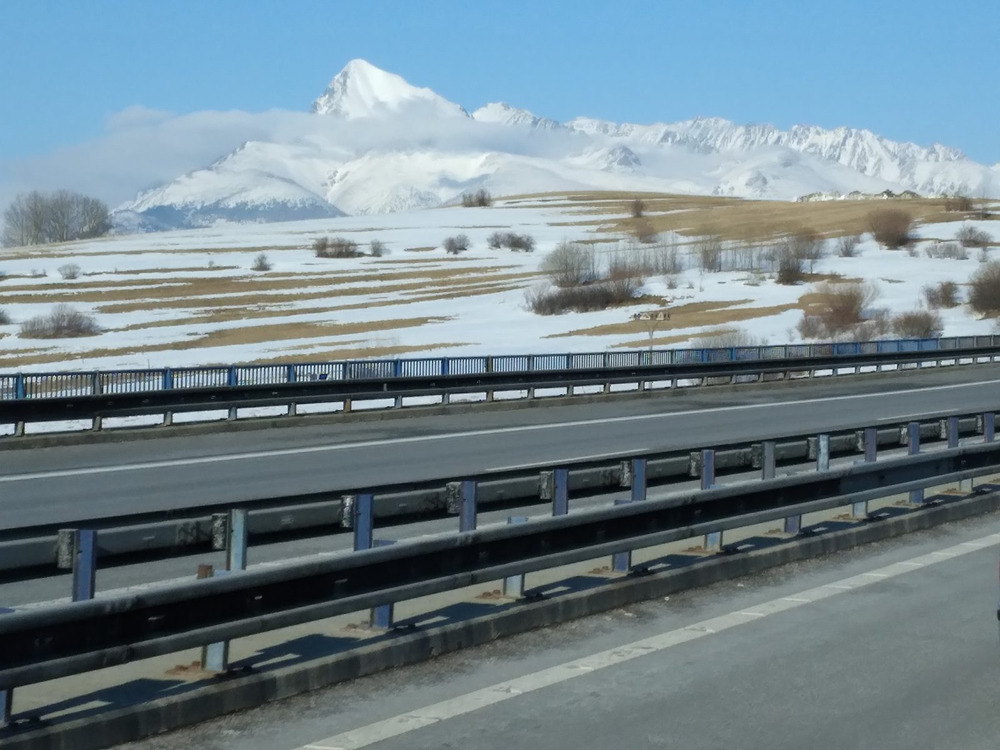
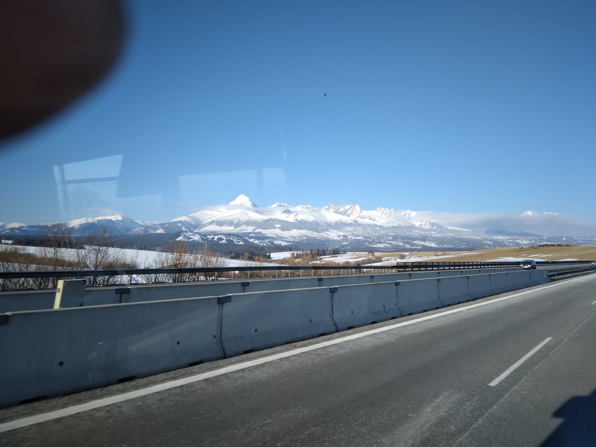
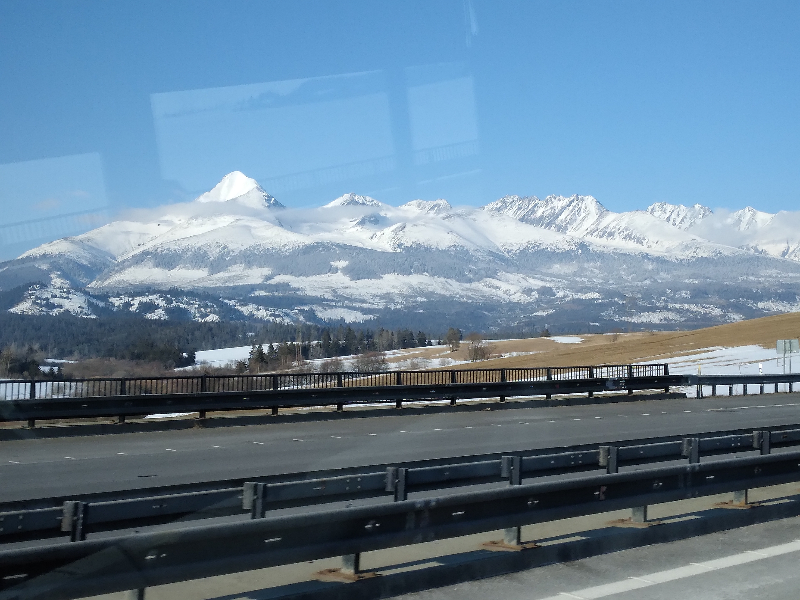
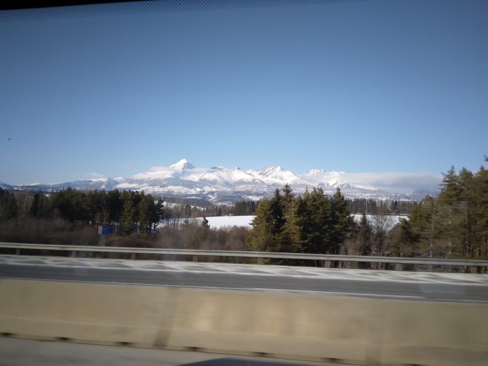
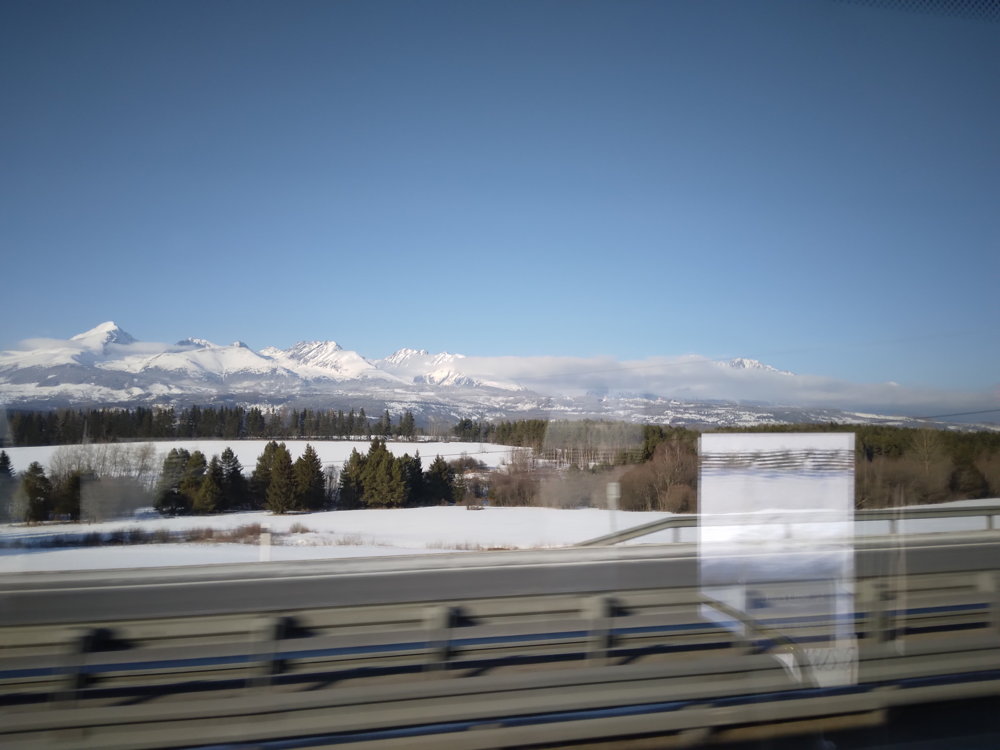

🇸🇰 Slovakia
Through Slovakia from the bus
Trips through Slovakia from the driver's seat. March 2022.
A few words
One of the places I've visited as a bus driver and traveler. Below are selected photos from the trip, organized by region or city. Most images are click-to-enlarge with original resolution.
🏔 Z cesty
Slovenské krajiny a města z cest. (9 fotek · březen 2022)

A view from the motorway of the snow-covered High Tatras with the peak of Kriváň (March 2022)

The snow-covered High Tatras with the peak of Kriváň beyond the motorway (March 2022)

The snow-covered High Tatras with the peak of Kriváň above forests and fields (March 2022)

The snow-covered High Tatras with Kriváň peak behind a spruce forest (March 2022)

The snow-covered High Tatras with the peak of Kriváň above a field (March 2022)